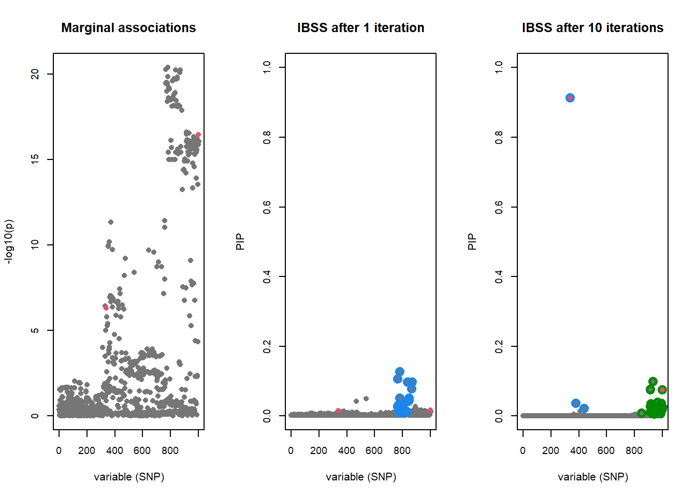
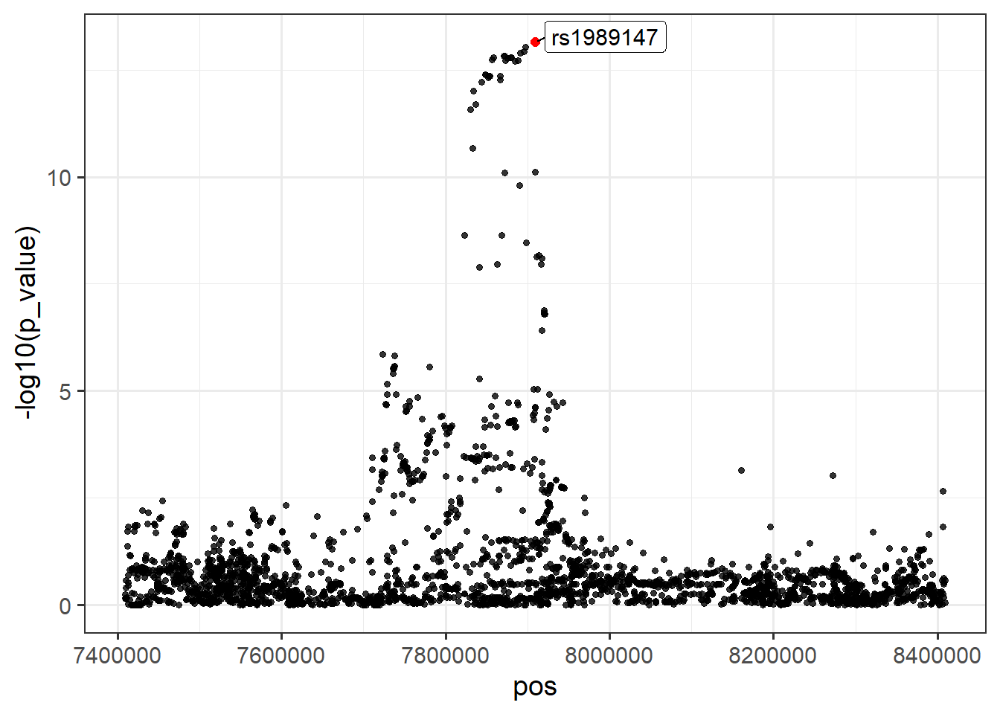
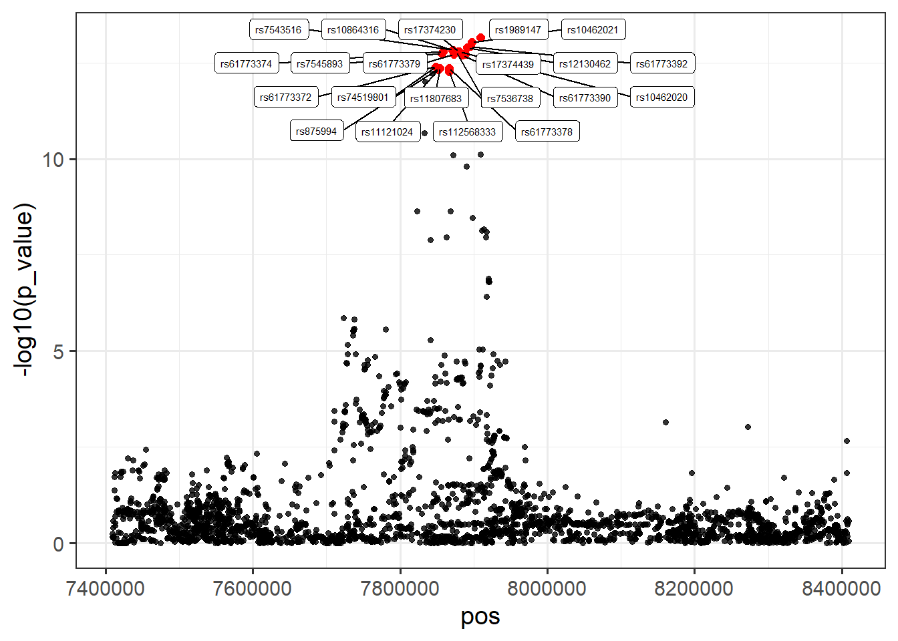

Chapter 5 Fine-mapping with SuSiE
This tutorial was created largely by modifying pre-existing tutorials written by Alesha Hatton (https://cnsgenomics.com/data/teaching/GNGWS23/module1/11_fine-mapping.html) and Gao Wang (https://stephenslab.github.io/susie-paper/manuscript_results/pedagogical_example.html). Thank you Alesha and Gao for your excellent tutorials!
5.1 Objective
SuSiE is a fine-mapping method used to determine which variants are most likely to be causal for a trait. It uses a Bayesian iterative approach to create “credible sets” of SNPs that are likely to each contain a causal variant.
In this tutorial we will first use SuSiE on simulated data where we know the true causal effects. We will then apply it to real data from (Ruth et al., 2020).
5.1.1 Requirements:
- 1000 Genomes European reference panel in PLINK1 format (bed/bim/fam)
- GWAS summary statistics from (Ruth et al., 2020) (GWAS catalog accession: GCST90012102)
- PLINK 1.9
- R packages susieR, dplyr, ggplot2, ggrepel, bigsnpr, and bigreadr.
5.2 Simulated Example
This example uses simulated data to illustrate the use of SuSiE for fine-mapping over stage-wise selection.
5.2.1 Load data
#> List of 8
#> $ X : num [1:574, 1:1002] 0.703 0.703 -0.297 -0.297 0.703 ...
#> $ chrom : chr "chr8"
#> $ pos : int [1:1002(1d)] 38854423 38854585 38854614 38854829 38855770 38856373 38856591 38856612 38856903 38857229 ...
#> $ true_coef : num [1:1002, 1:2] 0 0 0 0 0 0 0 0 0 0 ...
#> $ residual_variance: num [1:2(1d)] 1.1 1.01
#> $ Y : num [1:574, 1:2] 1.0446 -1.3656 -0.0235 -0.4344 0.4681 ...
#> $ allele_freq : num [1:1002, 1] 0.1483 0.0209 0.1368 0.2134 0.5627 ...
#> $ V : num [1:2, 1:2] 1.344 -0.0336 -0.0336 1.25415.2.2 Fit SuSiE to the data
Also perform univariate regression so that PIPs can be compared with p-values
# Fit SuSiE with L=5 (maximum number of causal variants per replicate)
fitted <- susie(dat$X, y, L = 5,
estimate_residual_variance = TRUE,
scaled_prior_variance = 0.2,
tol = 1e-3, track_fit = TRUE,
compute_univariate_zscore = TRUE,
coverage = 0.95, min_abs_corr = 0.1)
str(fitted, max.level = 1)#> List of 21
#> $ alpha : num [1:5, 1:1002] 9.98e-04 8.96e-32 9.32e-19 9.98e-04 9.98e-04 ...
#> $ mu : num [1:5, 1:1002] 0 -0.0221 -0.0514 0 0 ...
#> $ mu2 : num [1:5, 1:1002] 0 0.00232 0.00447 0 0 ...
#> $ Xr : num [1:574] -0.842 -0.274 -0.842 -0.842 1.209 ...
#> $ KL : num [1:5] -1.49e-05 5.87 8.68 -1.49e-05 -1.49e-05
#> $ lbf : num [1:5] 1.49e-05 6.23e+01 3.31e+01 1.49e-05 1.49e-05
#> $ lbf_variable : num [1:5, 1:1002] 0 -2.33 -1.49 0 0 ...
#> $ sigma2 : num 1.06
#> $ V : num [1:5] 0 0.251 0.154 0 0
#> $ pi : num [1:1002] 0.000998 0.000998 0.000998 0.000998 0.000998 ...
#> $ null_index : num 0
#> $ converged : logi TRUE
#> $ elbo : num [1:10] -867 -861 -858 -854 -850 ...
#> $ niter : int 10
#> $ intercept : num -7.82e-17
#> $ fitted : num [1:574] -0.842 -0.274 -0.842 -0.842 1.209 ...
#> $ trace :List of 10
#> $ sets :List of 5
#> $ pip : num [1:1002] 0 0 0 0 0 0 0 0 0 0 ...
#> $ z : num [1:1002] -0.8091 1.1147 -0.5836 -0.0842 -2.1866 ...
#> $ X_column_scale_factors: num [1:1002] 0.486 0.2 0.494 0.603 0.708 ...
#> - attr(*, "class")= chr "susie"# Let's have a look at the first iteration (by setting max_iter=1 this will give us the first iteration of fitted)
fitted.one.iter <- susie(dat$X, y, L = 5, max_iter = 1,
estimate_residual_variance = TRUE,
scaled_prior_variance = 0.2,
tol = 1e-3,
coverage = 0.95, min_abs_corr = 0.1)#> Warning in susie(dat$X, y, L = 5, max_iter = 1, estimate_residual_variance
#> = TRUE, : IBSS algorithm did not converge in 1 iterations!#> List of 19
#> $ alpha : num [1:5, 1:1002] 5.22e-18 1.61e-04 6.10e-04 7.44e-04 8.03e-04 ...
#> $ mu : num [1:5, 1:1002] -0.03868 -0.02164 -0.01568 -0.01138 -0.00922 ...
#> $ mu2 : num [1:5, 1:1002] 0.00381 0.002501 0.001695 0.001228 0.000992 ...
#> $ Xr : num [1:574] -0.814 -0.187 -0.802 -0.748 0.675 ...
#> $ KL : num [1:5] 6.021 2.322 0.713 0.404 0.295
#> $ lbf : num [1:5] 31.0473 0.9323 0.0954 0.0364 0.0199
#> $ lbf_variable : num [1:5, 1:1002] -1.836 -0.893 -0.396 -0.257 -0.198 ...
#> $ sigma2 : num 1.15
#> $ V : num [1:5] 0.17389 0.01527 0.00379 0.00207 0.00148
#> $ pi : num [1:1002] 0.000998 0.000998 0.000998 0.000998 0.000998 ...
#> $ null_index : num 0
#> $ elbo : num -867
#> $ niter : int 1
#> $ converged : logi FALSE
#> $ intercept : num -3.47e-17
#> $ fitted : num [1:574] -0.814 -0.187 -0.802 -0.748 0.675 ...
#> $ sets :List of 5
#> ..$ cs :List of 1
#> .. ..$ L1: int [1:24] 765 767 770 774 776 778 780 782 783 788 ...
#> ..$ purity :'data.frame': 1 obs. of 3 variables:
#> .. ..$ min.abs.corr : num 0.78
#> .. ..$ mean.abs.corr : num 0.922
#> .. ..$ median.abs.corr: num 0.92
#> ..$ cs_index : int 1
#> ..$ coverage : num 0.955
#> ..$ requested_coverage: num 0.95
#> $ pip : num [1:1002] 0.00232 0.00219 0.0022 0.0022 0.00315 ...
#> $ X_column_scale_factors: num [1:1002] 0.486 0.2 0.494 0.603 0.708 ...
#> - attr(*, "class")= chr "susie"5.2.3 Plot the SuSiE results
Plot both PIPs from SuSiE as well as the p-values from the regressions.
b <- dat$true_coef[, 1]
b[which(b != 0)] <- 1
# Run this code all at once to get side-by-side plots
par_saved <- par(mfrow = c(1, 3), cex.axis = 0.9)
# Plot the marginal associations
susie_plot(fitted, y = "z", b = b, max_cs = 1, main = "Marginal associations",
xlab = "variable (SNP)", col = "#767676")
# Plot PIPs after the first iteration
susie_plot(fitted.one.iter, y = "PIP", b = b, max_cs = 0.4,
main = "IBSS after 1 iteration", add_legend = FALSE,
ylim = c(0, 1), xlab = "variable (SNP)", col = "#767676")
# Plot PIPs after convergence
susie_plot(fitted, y = "PIP", b = b, max_cs = 0.4,
main = "IBSS after 10 iterations", add_legend = FALSE,
ylim = c(0, 1), xlab = "variable (SNP)", col = "#767676")
The “true” effects are highlighted in red. The strongest signal by p-value does not contain the causal variant, but is being tagged by two causal variants. The first iteration of SuSiE identifies the strongest signal by p-value, but by the 10th iteration the true causal variants are identified within two credible sets.
5.2.4 Let’s take a closer look at which variants are in the credible sets
#> $L1
#> [1] 765 767 770 774 776 778 780 782 783 788 790 791 792 814 817 824 827
#> [18] 834 837 838 847 849 868 869#> $L2
#> [1] 850 913 914 915 916 920 924 925 926 927 930 931 933 934
#> [15] 935 942 946 948 951 952 962 967 968 979 980 982 983 985
#> [29] 988 989 993 994 996 999 1000 1001 1002
#>
#> $L3
#> [1] 337 379 4405.3 Real data
In the simulation we used individual level data (genotypes and phenotypes). Often this is not available due to data access restrictions. Here we will use GWAS summary statistics and an LD reference panel. Let’s look at bioavailable testosterone in females from (Ruth et al., 2020).
5.3.1 Import GWAS data
First, download the GWAS summary statistics from GWAS catalog. The accession for this study is GCST90012102.
tgz <- runonce::download_file(
"https://ftp.ebi.ac.uk/pub/databases/gwas/summary_statistics/GCST90012001-GCST90013000/GCST90012102/GCST90012102_buildGRCh37.tsv.gz",
dir = "tmp-data")
readLines(tgz, n = 3)#> [1] "variant_id\tchromosome\tbase_pair_location\teffect_allele\tother_allele\teffect_allele_frequency\timputation_quality\tbeta\tstandard_error\tp_value"
#> [2] "rs533090414\t1\t18849\tC\tG\t0.0243198\t0.536412\t-0.0112297\t0.011473\t2.7E-01"
#> [3] "rs536836601\t1\t49318\tA\tG\t0.998616\t0.533058\t-0.0270737\t0.0463398\t6.4E-01"# reference panel to compute LD from
gzip <- runonce::download_file(
"https://vu.data.surfsara.nl/index.php/s/VZNByNwpD8qqINe/download",
fname = "g1000_eur.zip", dir = "tmp-data") # 488 MB
unzip(gzip, exdir = "tmp-data", overwrite = FALSE)
g1000_map <- fread2("tmp-data/g1000_eur.bim", select = c(1:2, 4:6),
col.names = c("chr", "rsid", "pos", "a1", "a0"))#> variant_id chromosome base_pair_location effect_allele other_allele
#> 1 rs533090414 1 18849 C G
#> 2 rs536836601 1 49318 A G
#> 3 rs569165477 1 54354 C T
#> 4 rs568927205 1 54712 T TTTTC
#> 5 <NA> 1 66435 ATT A
#> effect_allele_frequency imputation_quality beta standard_error
#> 1 0.0243198 0.536412 -0.01122970 0.01147300
#> 2 0.9986160 0.533058 -0.02707370 0.04633980
#> 3 0.9978580 0.565702 -0.01360340 0.03640820
#> 4 0.4144230 0.538572 -0.00103094 0.00351606
#> 5 0.9987750 0.657069 -0.04900750 0.05077440
#> p_value
#> 1 0.27
#> 2 0.64
#> 3 0.90
#> 4 0.85
#> 5 0.35
#> [ reached 'max' / getOption("max.print") -- omitted 1 rows ]FT_cleaned <- FT %>%
# QC on MAF >= 0.01
filter(effect_allele_frequency >= 0.01 & effect_allele_frequency <= 0.99) %>%
# rename some columns for compatibility with bigsnpr::snp_match()
rename(chr = chromosome, pos = base_pair_location,
a1 = effect_allele, a0 = other_allele) %>%
# align alleles to reference panel
snp_match(g1000_map) # match on chr/pos but can also match on chr/rsid#> 10,084,692 variants to be matched.#> 1,354,799 ambiguous SNPs have been removed.#> 7,376,325 variants have been matched; 0 were flipped and 5,967,949 were reversed.5.3.2 Find window around loci of interest
Let’s look at two loci:
Locus 1: rs1989147.
Locus 2: rs34954997, rs11879227, rs34255979. These variants in locus 2 are nearby so will be considered as one locus for the purpose of running SuSiE.
#> chr pos a0 a1 variant_id effect_allele_frequency imputation_quality
#> 1 1 7909373 C T rs1989147 0.806791 0.97999
#> beta standard_error p_value _NUM_ID_.ss rsid _NUM_ID_
#> 1 -0.0235512 0.00322554 7e-14 29924 rs1989147 70899# Extract 1 Mb locus surrounding rs1989147
locus1 <- filter(FT_cleaned, chr == 1, pos > 7909373 - 5e5, pos < 7909373 + 5e5)
# Plot locus
ggplot(locus1, aes(x = pos, y = -log10(p_value))) +
geom_point(alpha = 0.8, size = 1.3) +
geom_point(aes(x = pos, y = -log10(p_value)), color = "red", size = 2,
data = filter(locus1, rsid == "rs1989147")) +
geom_label_repel(aes(label = ifelse(rsid == "rs1989147", rsid, NA)),
size = 4, min.segment.length = 0)#> Warning: Removed 2815 rows containing missing values or values outside the scale
#> range (`geom_label_repel()`).
5.3.3 Create LD matrix
As we are using GWAS summary statistics, we need information of the correlation between variants. Here we are using 1000 Genomes European for convenience. If you are performing this analysis yourself, it is advised to use a larger sample. This requires PLINK to be installed and the 1000 Genomes European reference panel to be downloaded. Note we are calculating “r” not “r2”.
# Export the SNPs in this locus
locus1_snps_txt <- tempfile(fileext = ".txt")
write(locus1$rsid, file = locus1_snps_txt)
# Compute correlation matrix (LD) with PLINK
plink <- download_plink("tmp-data")
system(glue::glue(
"{plink} --bfile tmp-data/g1000_eur",
" --extract {locus1_snps_txt}",
" --keep-allele-order",
" --r square", # correlations as a square matrix, not squared correlations
" --out tmp-data/ld_locus1"
))#> PLINK v1.9.0-b.7.7 64-bit (22 Oct 2024) cog-genomics.org/plink/1.9/
#> (C) 2005-2024 Shaun Purcell, Christopher Chang GNU General Public License v3
#> Logging to tmp-data/ld_locus1.log.
#> Options in effect:
#> --bfile tmp-data/g1000_eur
#> --extract C:\Users\au639593\AppData\Local\Temp\RtmpuGBILi\file6f8030592788.txt
#> --keep-allele-order
#> --out tmp-data/ld_locus1
#> --r square
#>
#> 32574 MB RAM detected; reserving 16287 MB for main workspace.
#> 22665064 variants loaded from .bim file.
#> 503 people (240 males, 263 females) loaded from .fam.
#> --extract: 2816 variants remaining.
#> Using up to 8 threads (change this with --threads).
#> Before main variant filters, 503 founders and 0 nonfounders present.
#> Calculating allele frequencies... 0%1%2%3%4%5%6%7%8%9%10%11%12%13%14%15%16%17%18%19%20%21%22%23%24%25%26%27%28%29%30%31%32%33%34%35%36%37%38%39%40%41%42%43%44%45%46%47%48%49%50%51%52%53%54%55%56%57%58%59%60%61%62%63%64%65%66%67%68%69%70%71%72%73%74%75%76%77%78%79%80%81%82%83%84%85%86%87%88%89%90%91%92%93%94%95%96%97%98%99% done.
#> Total genotyping rate is in [0.9999995, 1).
#> 2816 variants and 503 people pass filters and QC.
#> Note: No phenotypes present.
#> --r square to tmp-data/ld_locus1.ld ... 0% [processing]writing] done.5.3.4 Read in data and fit SuSiE
susie_rss() is the function to fit SuSiE using summary statistics. Earlier we used susie() function which requires individual level data.
5.3.5 Examine results
#>
#> Variables in credible sets:
#>
#> variable variable_prob cs
#> 1456 0.09199869 1
#> 1420 0.07451778 1
#> 1417 0.06848847 1
#> 1401 0.06379124 1
#> 1334 0.05783427 1
#> 1364 0.05781606 1
#> 1367 0.05778666 1
#> 1331 0.05777183 1
#> 1347 0.05429258 1
#> 1288 0.05367458 1
#> 1339 0.04928034 1
#> 1280 0.04659030 1
#> 1391 0.04472727 1
#> 1378 0.04098725 1
#> 1256 0.03098191 1
#> 1257 0.03085088 1
#> [ reached 'max' / getOption("max.print") -- omitted 5 rows ]
#>
#> Credible sets summary:
#>
#> cs cs_log10bf cs_avg_r2 cs_min_r2
#> 1 7.455457 0.9186663 0.8268138
#> variable
#> 1256,1257,1267,1270,1272,1280,1288,1314,1316,1331,1334,1339,1347,1364,1367,1378,1391,1401,1417,1420,1456locus1_susie <- arrange(summary(fitted_rss_1)$vars, variable)
locus1 <- cbind(locus1, locus1_susie[-1])
# Plot
ggplot(locus1, aes(x = pos, y = -log10(p_value))) +
geom_point(alpha = 0.8, size = 1.3) +
geom_point(color = "red", size = 2, data = filter(locus1, cs == 1)) +
geom_label_repel(aes(label = rsid), size = 2, max.overlaps = 45,
data = filter(locus1, cs == 1))
Challenge 1 How does the PIP compare to the p-value? Generate a plot to show this.
5.3.6 Locus 2
Now perform similar analyses on locus2.
Challenge 2 How does the PIP compare to the p-value? Generate a plot to show this.
Challenge 3 Why might there be no result in fitted_rss_2 for L=2?
Challenge 4 What if we changed to a 75% credible set for locus 2? Write code to do this and plot. Can we trust this result?